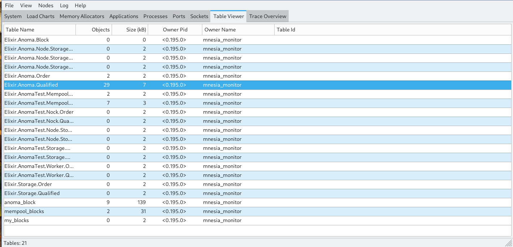

Observer
Index
How To use Observer
It is sometimes useful to have multiple terminals/IEX's in the same running system, or perhaps to connect to a running deploy Anoma Instance. We can connect to other IEX instances in this way:
Viewing Anoma
One can view Anoma by going to the Applications view of the Observer pane and clicking on anoma

This view is quite nice because if we spawn a process, we can see it attach
alias Anoma.Storage
alias Anoma.Node.Storage.Communicator, as: Scom
alias Anoma.Node.Executor.Communicator, as: Ccom
alias Anoma.Node.Mempool.Communicator, as: Mcom
import TestHelper.Nock
storage = %Anoma.Storage{
qualified: Anoma.Qualified,
order: Anoma.Order
}
name = :anoma
snapshot_path = [:my_special_nock_snaphsot | 0]
node = Anoma.Node.com_names(name)
key = 555
zero = zero_counter(key)
pid_zero = Mcom.tx(node.mempool, zero).pid#PID<0.4479.0>Then we can see this same process as a child to one of the pools

Looking at Mnesia Tables
One can go to the Table view, and click view to turn it from ets tables to mnesia tables.
Now you should be able to see this:

If we click on a table like the one highlighted we can see the values in the table

Click on the data inside of here gives us an inspector pane of the data